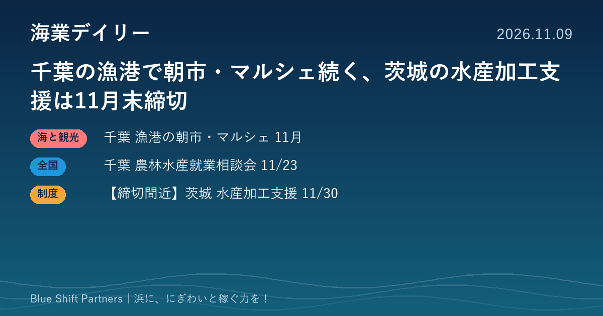

2026.11.09
千葉の漁港で朝市・マルシェ続く、茨城の水産加工支援は11月末締切

本日は首都圏の話題を3件お届けします。千葉県の「ちばが旬！販売促進月間」に合わせた漁港の朝市やマルシェ、千葉県農林水産就業相談会の開催、そして締切が11月30日に迫る茨城県の水産加工業向け支援です。
千葉県「ちばが旬！販売促進月間」、11月後半も漁港の朝市やマルシェが続きます
千葉県は11月1日から30日までを「ちばが旬！販売促進月間」とし、量販店でのフェアのほか、県内各地の水産関連イベントを紹介しています。11月後半では、11月22日（日）に旭市のいいおかみなと公園で「いいおかみなとマルシェ」（竜王まつり内）が開かれ、イワシやハマグリなどの水産加工品が並びます。同じ22日には南房総市の千倉漁港前広場で「ちくら漁港朝市」（8時〜正午頃）があり、鮮魚・干物の販売や「手ぶらで貸切海鮮バーベキュー」が案内されています。いすみ市の大原漁港では、毎週土曜の「土曜マーケット」と毎週日曜の「港の朝市」が開かれています。
ここがポイント：県の販促月間に合わせて催しを載せてもらうことで、漁港の朝市やマルシェを県の発信に乗せて広く知ってもらえます。来年の同じ時期に向けて、自分の浜の催しを県の担当課へ早めに知らせておくのも一つの方法です。
出典：千葉県「ちばが旬！販売促進月間（令和8年11月）」（2026-10-30）
千葉県農林水産就業相談会、11月23日に千葉市で開催（海洋人材確保・育成センターも共催）
千葉県などは、11月23日（月・祝）10時から16時（受付は15時30分まで）に、千葉市中央区のホテルプラザ菜の花4階で「令和8年度千葉県農林水産就業相談会」を開きます。面談による個別の就業相談、就農経験者などとのセミナー形式の談話、農業委員会へのオンライン相談が行われます。共催には千葉県や千葉県園芸協会などのほか、千葉県海洋人材確保・育成センターも名を連ねています。参加は無料で、事前申込みは不要です。
ここがポイント：浜の担い手を探す漁協や事業者にとっては、県内で一次産業に関心を持つ人が集まる場の様子を知る機会になります。漁業の相談がどこまで受けられるかは、事前に県の担い手支援課へ問い合わせておくと確実です。
出典：千葉県「令和8年度千葉県農林水産就業相談会を開催します」（2026-11-06）
【締切間近】茨城県 水産加工業緊急支援事業、第1次の受付は11月30日17時まで
茨城県は、県内に水産加工場を持ち水産加工業を営む中小規模の事業者を対象に、水産加工原材料転換等促進事業、水産加工排水処理対策支援事業、水産加工原材料高騰対策支援事業の3つの補助金の申請を受け付けています。原材料転換等と排水処理対策の受付は11月30日（月）17時まで、原材料高騰対策は第1次が11月30日まで、第2次が12月1日から12月28日まで、第3次が令和9年1月4日から1月29日までです。いずれも申請額が予算の上限に達した時点で募集を終えるとされ、申請は電子申請・届出サービスまたは書面で行います。補助率・上限額・対象経費は県のページでは公募要領を確認するよう案内されています。
ここがポイント：原料の切り替えや排水処理設備、仕入れ値の上昇への対応に充てられる可能性があり、予算に達すると締切前でも終わるため、検討中の事業者は早めの申請が安心です。補助率などの詳細は公募要領を読み、県の漁政課に確かめてから準備を進めてください。
出典：茨城県「水産加工業緊急支援事業」（2026-10-26）
浜の朝市やマルシェは、県の販促月間のような大きな発信に乗せると、地元の外からも人を呼べます。人材の確保や加工の設備投資も含め、県の取り組みをうまく使うことが、浜の稼ぐ力を底上げする近道です。